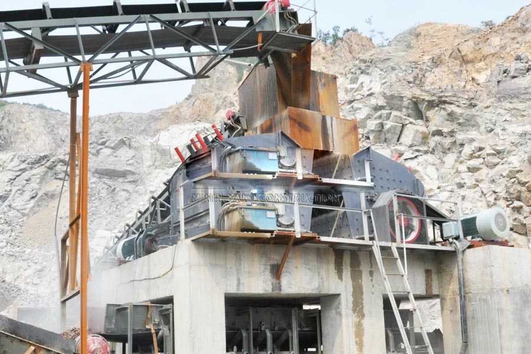

Construction waste crushing production line

Mobile construction waste crushing station for urban construction waste crushing.
basalt artificial stone crusher
basalt artificial stone crusher, Basalt production line, production line process high basalt basalt hardness, so the basalt crushing process to design a reasonable, considering the investment costs broken item, we must consider the production costs of the production line.
Equipment _ basalt basalt stone crushing production line equipment, CAG basalt stone crushing production line Basalt crusher, where basalt suppliers, manufacturers. This production line is broken basalt stones Basalt Details page sets of equipment.

Basalt crushing production line
CAG Machinery (Basalt crushing production line) in mineral processing aspects widely used, many customers get more benefits, CAG product also mainly for minerals, rock crusher, mineral grinding, sand stone and mineral processing and other fields. We provide Basalt crushing production line technical guidance, based on your specific needs, for your rational design of production lines.
Basalt basalt crusher Basalt processing purposes, the device features: mechanism is simple, durable choice for the vast majority of the production line. Basalt basalt crushing process and technology to repair roads, railways, airport runways in the best of stone materials.
Because the tariff is low, you can (Basalt crushing production line) to save a lot of costs, it can also be purchased to get more benefits, our products and designs for you is really value for money.
Basalt crushing line equipment configuration:
vibrating feeder + PY series cone crusher / PE series jaw crusher + belt conveyor + circular vibrating screen;
vibrating feeder + PE series jaw crusher + PF series impact crusher + PCK series vertical shaft impact crusher + circular vibrating screen + belt conveyor.
Basalt gravel sand production line equipment for material properties basalt, basalt gravel production line configuration, there are two: 1, vibrating feeder + jaw crusher + cone crusher + conveyor belt + round shaker; 2 , vibrating feeder + jaw crusher + impact crusher.
Nigeria basalt crushing line equipment manufacturer. Basalt cone crusher for gravel crushing production line successfully, basalt cone crusher, gravel crushing production line with the rapid development of urban economy, cone crusher successfully opened up a vast market.
Leave Me A Message, Now
If you have any questions regarding equipment prices, production line configuration or other problems, you can send a message to us, we will contact you soon.